The Problem
Sure Walk is UT Austin’s free late-night ride service. Their core purpose is to get students safely home.
Currently Sure Walk operates on a Google Form, where students have to fill out each time they wish to use the service. If they want to ride with friends, everyone within the group is meant to also fill out the form. Staff then usually call one person, who passes updates to everyone else.
Today
Each rider submits a separate form
- Rider 1 : Submits Google Form
- Rider 2: Submits Google Form
- Rider 3: Submits Google Form
Staff call whoever submitted first and ask who they’re with
I’m designing a group ride flow that lets one student request a ride for their friends, and makes it clear who staff will contact about the booking.
User Research
To understand group rides, I drew on two sources: an interview with a frequent Sure Walk user and our team’s conversations with Sure Walk staff.
Jennie, a frequent Sure Walk user
I interviewed Jennie, one of our three sponsor users. She was an active rider when we spoke and has stayed involved as the design develops.
Jennie
Sponsor user
- How often she rides
- “3-4 times a week”
- When she rides
- “It’s often after work or an org event.”
- Why she rides
- “I didn’t feel comfortable walking alone at night, so I’d call Sure Walk”
Main Takeaway: Riding with friends takes coordination
-
Each rider submits their own request
“It’s inconvenient because everyone has to fill out the form individually”
— Jennie, sponsor user Design question
Can one person submit for the whole group?
-
Friends coordinate to stay together
“We try to submit at the same time so they don’t separate us.”
— Jennie, sponsor user Design question
Can a group be booked as one ride?
-
One person becomes the contact anyway
“They usually end up calling whoever submitted first and ask, ‘Are you with other people? What are their names?’”
— Jennie, sponsor user Design question
How do we make the contact person’s role clear before staff call?
Her biggest frustration overall was wait time. Accurate estimates are a broader project goal, outside my group booking work.
What Sure Walk told us
We also talked with the people who run Sure Walk, starting with our clients, who lead the service at Parking & Transportation Services.
From our clients
Every rider’s name has to be on record
The forms double as a record. Our clients need each rider’s full name so they can confirm who was in a ride and when. That is why friends can’t simply share one form today.
Our team also interviewed Sure Walk staff. They trade off between three roles:
-
Role
Dispatcher
Decides which vehicle takes which ride.
-
Role
Navigator
Rides along, calls riders, and stays in touch with the dispatcher.
-
Role
Driver
Drives the vehicle.
Groups ignoring rules and only filling out one form
“[Some] people fill out the form for themselves but have a whole party with them.”
What the research pointed to
Riders want one request. Sure Walk needs every rider’s name.
My challenge was to let one person book for the group and keep every name on the record, without adding steps that could keep someone from getting a ride.
Proposed
One person requests a ride for the group
- Rider 1: Submits ride request
- + Rider 2 added by Rider 1
- + Rider 3 added by Rider 1
Staff call Rider 1, the named primary contact
My Design Process
Exploring ways to add riders
Before going into Figma, I sketched the group ride flow on paper to work out what a requester would need to tell us about each friend.
Paper sketch · Group Ride lo-fi
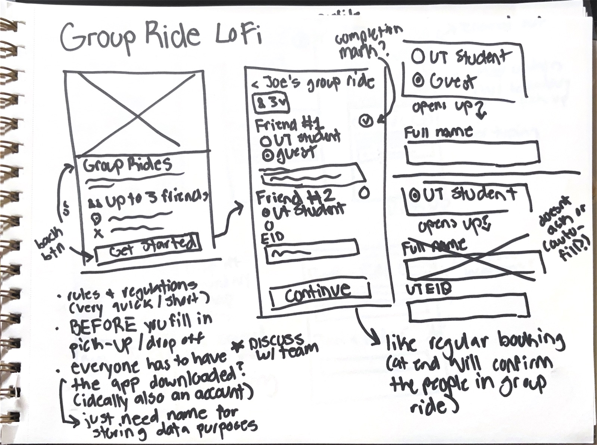
-
Set expectations first: a short intro to group rides, with quick rules and a limit of three friends, before pickup and drop-off.
-
Two kinds of riders: UT students would enter an EID, and guests would enter a full name.
-
Confirm the group at the end, the same way a regular booking is confirmed.
An open question I flagged
Did every passenger need the app downloaded, and ideally an account? Is that more friction compared to the way it currently works?
V1
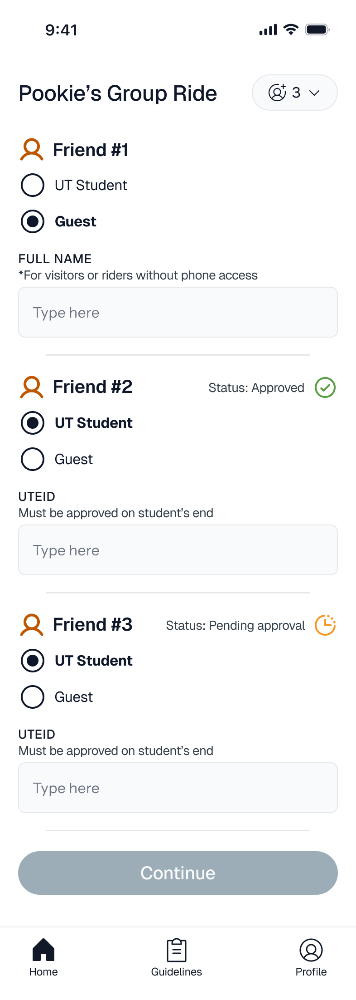
After I built V1, my design lead wasn’t sold on the direction, and I was stuck on other ways to approach it. She suggested Crazy 8’s, sketching eight ideas in eight minutes, to get more options out quickly.
-
V1
My first Figma version. My lead pushed for other approaches.
-
Crazy 8’s
Eight quick sketches to explore other layouts.
Sketching that fast helped me figure out how I wanted to space out the screen, with a card for each rider. My lead liked the direction and asked me to build my favorite option in Figma. That became V2, and the later versions grew from it.
Key decision
Removing individual passenger approval
An early version asked every passenger to approve being added to the group in the app. I expected that to help connect riders to their accounts. After talking with my sponsor user, there were a few practical things I realized: someone with a dead phone couldn’t approve and the flow assumed every passenger had the app.
Before · Early iteration (V1)
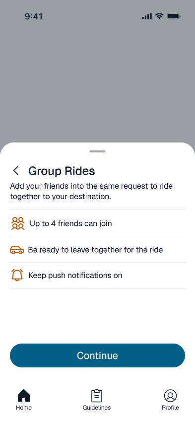
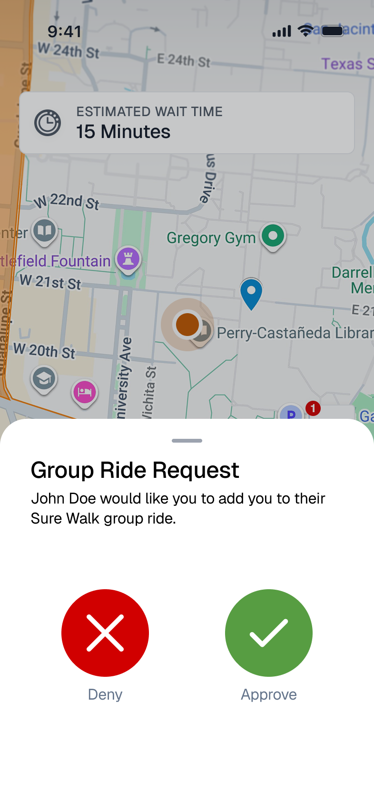
Approval step removed
After · Later iteration (V5)
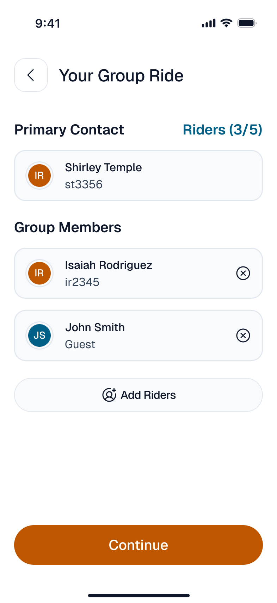
“One time, my friend’s phone died. They tried calling her... they didn’t call anyone else in our group.”
This story is about the current service, not a prototype task. It showed how risky it is to depend on one reachable phone, so making every rider approve on their own phone didn’t make sense.
We removed the approval requirement so the requester can add passengers on their behalf. Making every person complete another step would undermine the point of one person booking for the group.
Choosing what passenger information to collect
I explored entering a UT EID to identify each student. That raised questions about account availability and access to university records. The team’s operational requirement was passenger names, so the proposed direction asks for names and makes extra phone numbers optional.
Before · V2
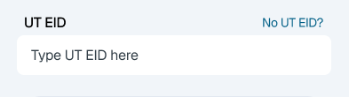
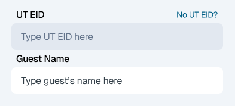
After · V6
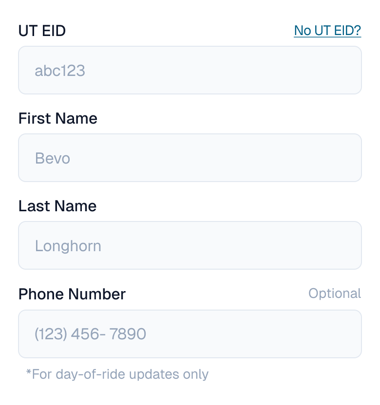
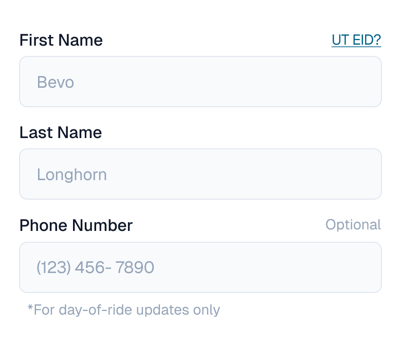
V5 · Confirmation
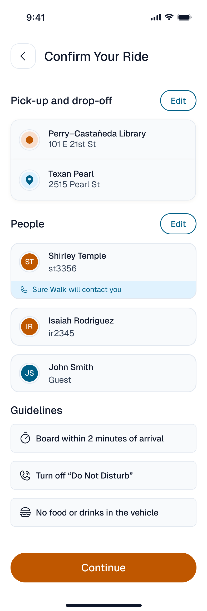
Team decision
Editing stops at confirmation
To keep the first release feasible, the team decided riders can’t be edited after a booking is confirmed. Staff record the actual passenger count when the ride arrives, and we removed leadership transfer to avoid another contact-management flow. I still see value in editing after booking, so for now the requester reviews everyone before submitting. Groups that change after booking will need guidance that matches the service’s process.
Recent change
Making the primary contact clear
Sure Walk coordinates pickups by phone, so a booking can fall apart if the person being called isn’t expecting it or has Do Not Disturb on. Testing also showed that putting this in the onboarding guidelines didn’t mean riders remembered it later.
Before · V4
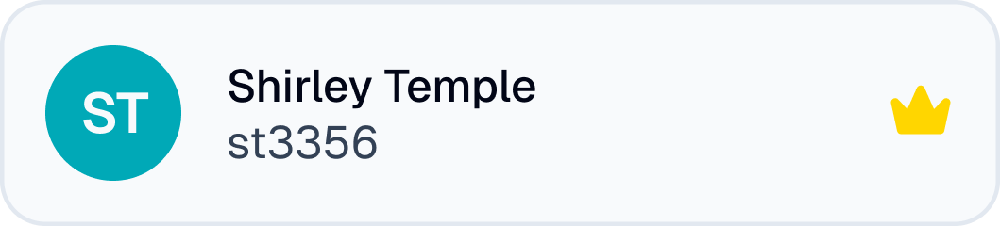
After · V6
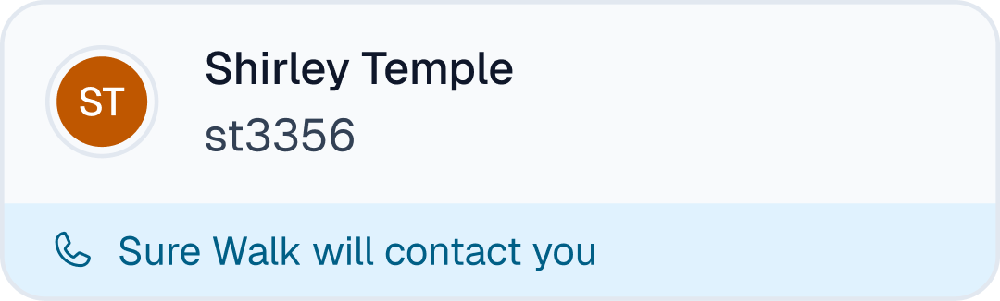
I still need to test whether riders notice the message and understand that it implies they will be the ones contacted by Sure Walk.
Refining hierarchy and consistency
Alongside the booking logic, I refined how the flow presents riders and actions, using shared components, color tokens, and type. These changes are about consistency and hierarchy. Their effect on usability hasn’t been evaluated yet.
Passenger list → rider cards in ride details
Riders now appear as cards that match the group setup screen, with the same profile treatment as other screens. Also no ability to edit for feasibility.
Before · V1
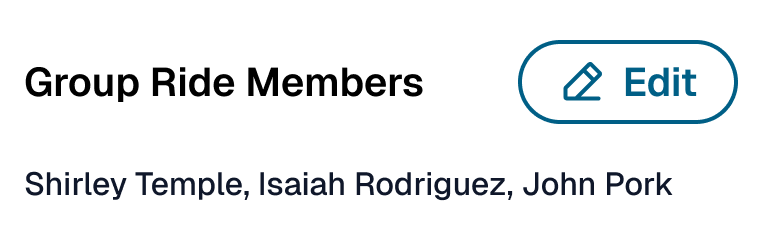
After · V6
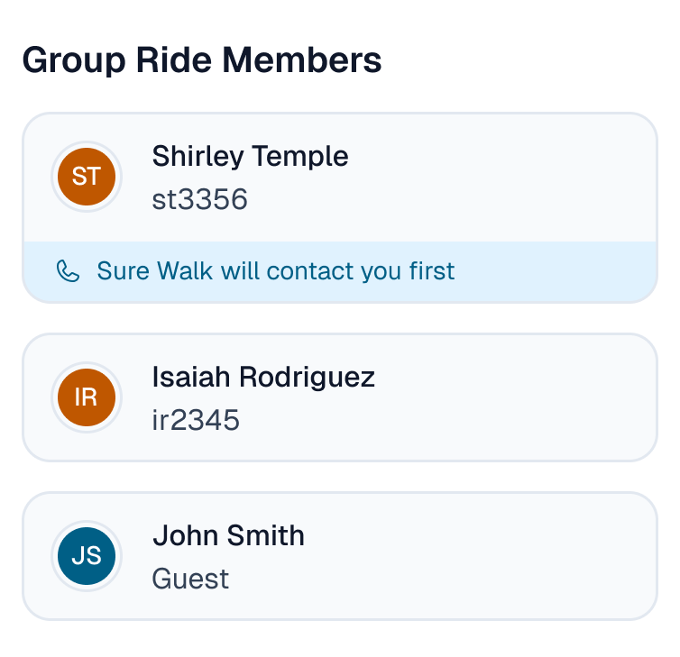
Removing a rider
I replaced the trash icon after feedback.
Before · V2
After · V6
Clearer visual hierarchy
Saving or canceling when adding a rider is not the main action. This helped differentiate the buttons from the primary “Continue” button below.
Before · V4
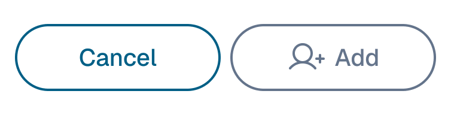
After · V6
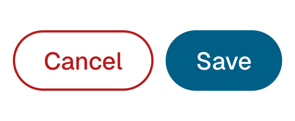
Testing: Round 1
Tested prototype · Round 1
In our first documented round, one participant went through onboarding, individual booking, and group booking in an earlier prototype. The proposed solution below came after this round.
What worked
She completed the group booking task and rated it 5 out of 5 for ease.
Still needs work
-
She didn’t notice Add Riders until she was given the group task.
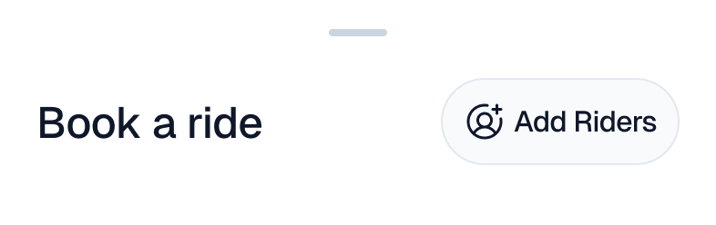
-
She was confused and asked what “Share Group Ride” did.
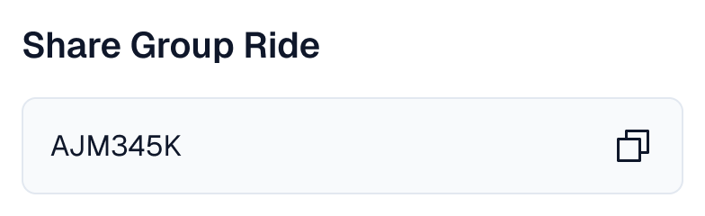
-
She read the clock as trip length, not wait time.
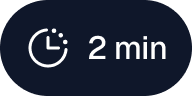
Following a task and discovering a feature on your own need separate attention. Some prototype inputs were automated, which also limits what one session can tell us.
Proposed Solution
This is the current working group booking flow. This hasn’t been tested yet!
-
Start a group ride
The requester is listed as the Primary Contact, with a note that Sure Walk will contact them.
-
Add riders
The requester adds each rider on their behalf. No one else has to approve the booking.
-
Set pickup and destination
The group books one ride, like a regular booking.
-
Review and confirm
The requester checks pickup, drop-off, and riders, sees the primary-contact reminder, and makes final edits before submitting.
Next Steps
Tested in Round 1
The testing prototype, before the contact-role and passenger-field changes. The findings above apply only to this version.
Newer changes · Awaiting validation
- • Primary-contact note and confirmation reminder
- • Proposed passenger fields: names, with optional phone numbers
- • Proposed interim contact copy
Status
In development, with a beta planned before winter break. The beta will be our first look at how group booking works in practice.
Not yet measured
We haven’t measured any change in booking time, missed calls, or failed pickups.
What I’m doing next
Run a second round of testing on the proposed flow, starting with whether riders understand the contact role. Confirm how group requests handle shared pickup and destination. Settle the passenger fields and fallback contact process with the team. After release, compare group request completion and booking errors against a clear baseline.
Key Takeaways
-
Keep talking to one real rider
I didn’t expect to keep learning from the same person, but every conversation with Jennie gave me a clearer picture of someone who relies on Sure Walk. She rides in groups, which is what pointed me to group rides and kept me pushing when the idea first met resistance.
-
Cutting is part of the work
A lot didn’t make it, including passenger approval and leadership transfer. The pivots were frustrating, and after V1 I felt stuck. Crazy 8’s with my lead got me to a flow I could take ownership of.
-
Other designers showed me my strengths
I’d been the only designer on past projects. Working beside teammates who lean toward research or content design showed me how much each skill set catches, and that mine are UI and content hierarchy.
Thanks for Reading!
Curious about my other projects? Check them out below!
Back to Projects